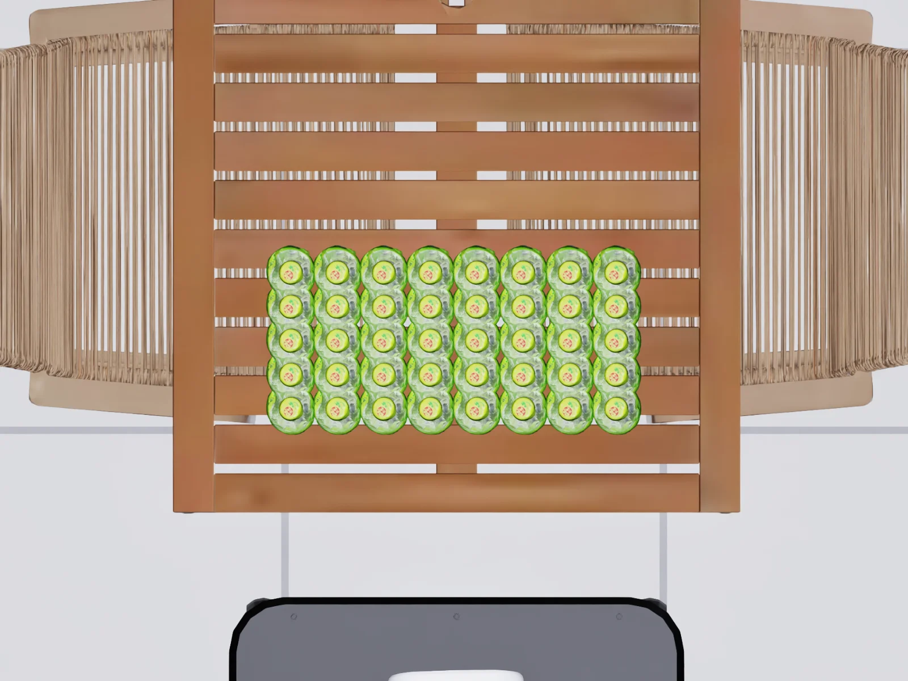

텔레오퍼레이션 시간을 데이터로 바꾸지 않으려면
ROBOTIS에서 AI Worker 데이터 수집을 하면서, 시연 한 개를 만드는 데 사람이 계속 붙어 있어야 한다는 점이 가장 큰 비용이라고 느꼈습니다. 제 경우 8시간을 일해도 녹화된 시연은 쉬지 않을 때 약 3시간, 규칙적으로 쉬면 약 1.5시간 분량이었습니다.
그래서 병 집기처럼 단순한 작업은 로봇이 스스로 집고 녹화해 시연을 만들게 했습니다. 아래는 같은 단위로 맞춘 비교입니다.
| 수집 방식 | 사람 | 걸린 시간 | 녹화 분량 |
|---|---|---|---|
| 텔레오퍼레이션 (쉬지 않음) | 필요 | 8시간 | 약 3시간 |
| 텔레오퍼레이션 (규칙적 휴식) | 필요 | 8시간 | 약 1.5시간 |
| 자동 수집 | 불필요 | 약 6시간 (로그 기준) | 2.98시간 (629개) |
텔레오퍼레이션 수치는 제 작업 경험이고, 자동 수집은 시작과 종료 시각이 남은 로그 기준입니다. 두 데이터의 품질은 비교하지 않았습니다. 텔레오퍼레이션 데이터로 학습한 정책이 없어서 자동 수집이 텔레오퍼레이션을 대체한다고는 말할 수 없습니다.
오픈소스 위에서 직접 만든 부분
ROBOTIS의 오픈소스(AI Worker 제어 소프트웨어, 학습 서버 cyclo_intelligence, 시뮬레이션 환경 cyclo_lab)를 기반으로 혼자 수정하고 구현했습니다. 저장소 기록 기준으로 2026년 9월 5일부터 10월 22일까지 제 커밋이 96개이고, 자동 수집 패키지는 새로 만들어 약 3,700줄을 추가했습니다.
| 오픈소스가 제공한 것 | 직접 구현하거나 수정한 것 |
|---|---|
| AI Worker 로봇 모델과 ROS 2 제어 | 파지 후보 생성부터 접근·들기·녹화 저장까지 이어지는 수집 실행 |
| Isaac 시뮬레이션 환경과 로봇 USD(3D 장면 파일) | 카메라 4개와 좌표 정합, 센서 토픽 연결 |
| GraspNet, CenterPose, GR00T 모델 | 두 후보 생성기를 같은 실행 흐름에 연결, 성공 판정, 평가 절차 |
한 번의 시도가 데이터가 되기까지
| 단계 | 입력과 역할 | 다음 단계로 전달하는 것 |
|---|---|---|
| 장면 입력 | RGB·깊이 영상, 점군, 카메라와 로봇 좌표 관계 | 대상 병 위치와 장면 정보 |
| 후보 생성 | GraspNet 또는 CenterPose(병 전용 규칙 포함) | 파지 위치·방향·폭 |
| 실행 | 역기구학(IK, 팔 관절 각도 계산) 사전검사, 접근·파지·들기 | 동작 상태와 녹화 |
| 성공 판정 | 병이 3.5cm 이상 올라가 0.5초 유지되고 녹화 저장이 끝났는가 | 성공 시연 목록, 실패 기록 |
| 학습 | 성공 시연만 변환, 머리 카메라 1개와 손목 카메라 2개 입력 | GR00T 체크포인트 |
모션 명령이 끝났다는 사실만으로는 성공을 알 수 없어서, 명령 완료·물체 상승·저장 완료를 따로 확인합니다. 실패한 시도도 기록에 남기고, 성공한 시연만 학습에 씁니다. IK 사전검사에서 후보가 하나도 남지 않으면 그 시도는 후보 생성을 1회 시도한 뒤 종료합니다.
후보 생성기 두 개를 같은 흐름에 연결하기
파지 후보 생성기로 GraspNet을 먼저 썼고, 결과가 고르지 않아 CenterPose(물체 자세 추정 모델)를 받아 비교하게 됐습니다. 두 방식은 입력과 전제가 달라 비교할 기준이 먼저 필요했습니다.
GraspNet에서는 선택한 대상점 쪽으로 파지 위치를 옮기는 규칙(휴리스틱)을 고정된 세 위치에서 20회씩 켜고 꺼서 비교했습니다. 120시도의 초기 조건 60쌍이 일치함을 확인했습니다.
| 조건 | 왼쪽 | 중앙 | 오른쪽 | 전체 |
|---|---|---|---|---|
| 규칙 ON | 14/20 | 14/20 | 18/20 | 46/60 |
| 규칙 OFF | 12/20 | 6/20 | 20/20 | 38/60 |
전체는 늘었지만 오른쪽에서는 줄었습니다. 이 배치에서만 본 시뮬레이션 결과라서 규칙을 제거하거나 확정하는 결론은 내리지 않았습니다.
CenterPose에서는 똑바로 선 병의 자세가 약 14~15° 기울어져 나오는 문제가 풀리지 않았습니다. 카메라 입력 변환이 원인인지 확인하려고 표식 9개를 6개 프레임에서 렌더링 투영과 비교했고, 평균 0.66px(최대 0.90px)로 일치했습니다. 입력과 투영은 원인이 아니라는 뜻입니다. 10월 28일 기록 시점에는 오차가 생기는 단계를 찾지 못했습니다. 현재 수집은 병이 서 있다는 전제의 전용 파지 규칙과 FAN 모델을 씁니다.
40개 위치로 조건을 고정하기
처음에는 두 방식을 비교할 "일관성" 기준이 없어서 결과 해석이 갈렸습니다. 병 위치를 5줄 × 8열 격자 40곳으로 고정하고, 위치마다 방식별 10회씩 반복했습니다.

위 장면은 위치를 보여주기 위해 병 40개를 한꺼번에 놓은 것이고, 평가는 한 번에 병 1개로 했습니다.
| 수집 | 시도 | 성공 시연 |
|---|---|---|
| 1차 GraspNet (무작위 초기 배치) | 300 | 225 (75.0%) |
| 1차 CenterPose (무작위 초기 배치) | 300 | 248 (82.7%) |
| 2차 GraspNet (40위치 고정) | 400 | 310 (77.5%) |
| 2차 CenterPose (40위치 고정) | 400 | 319 (79.8%) |
1차에서는 CenterPose가 7.7%p 높았고, 2차에서는 차이가 2.3%p로 줄었습니다. 장면 구성이 달라서 위치를 고정한 효과인지는 확정하지 못했습니다.
실패는 가장 먼 줄에 몰렸다
2차 800시도 중 실패 171건의 내역은 IK 후보 탈락 169, 녹화 초기화 오류 1, 중단 1입니다. 가장 먼 줄(X=0.295m)에서 160시도 중 133이 실패해 성공이 27에 그쳤고, X=0.430m와 0.475m 줄은 각각 160시도가 모두 성공했습니다.
거리와 파지 방향이 영향을 줬다고 추정하지만 관절 한계, 충돌, 탈락 단계는 확정하지 못했습니다. 40개 위치 전체를 IK로 사전 검증하지 않은 것이 원인 분리를 어렵게 만들었습니다.
학습한 정책을 같은 40개 위치에서 평가하기
두 데이터셋으로 NVIDIA GR00T N1.7(영상·언어·로봇 상태를 보고 동작을 출력하는 VLA 모델, Vision-Language-Action)을 각각 150,000스텝 학습했습니다. 언어 모델과 영상 인코더는 고정하고, 약 31.4억 개 파라미터 중 약 16.2억 개(연결부와 동작 생성부)만 학습했습니다. 배치 크기는 8, 학습률은 0.0001입니다.
평가는 40개 위치 × 3회 × 2모델, 총 240회입니다. 시도당 30초이고 성공 기준은 수집과 같습니다. 학습에 쓴 위치를 그대로 다시 썼으므로 새 위치에 대한 일반화 성능은 아닙니다.
| 정책 학습 데이터 | 전체 | X=0.295 | X=0.340 | X=0.385 | X=0.430 | X=0.475 |
|---|---|---|---|---|---|---|
| GraspNet 시연 310개 | 75/120 | 5/24 | 11/24 | 19/24 | 22/24 | 18/24 |
| CenterPose 시연 319개 | 75/120 | 1/24 | 14/24 | 20/24 | 22/24 | 18/24 |
전체 성공 횟수는 같았지만 줄별로는 달랐습니다. 40개 위치 중 두 모델의 성공 횟수가 같은 곳은 22곳이고, 둘 다 3번 모두 실패한 곳이 7곳, 둘 다 3번 모두 성공한 곳이 14곳입니다. 가장 먼 줄에서 정책 성공이 가장 낮았고, 이 줄은 수집 단계에서도 성공이 가장 적었습니다. 학습 데이터가 이 위치에 적었던 것이 원인일 수 있지만 검증하지는 않았습니다. 위치당 3회, 줄당 24회로 표본이 작아서 줄 단위 차이를 일반화하지 않습니다.
평가 결과가 틀렸던 순간
첫 평가에서 GraspNet 시연으로 학습한 정책은 120회 중 1회를 성공했고, CenterPose 정책은 39회에서 0회를 성공한 뒤 저장 오류로 중단됐습니다. 모델이 나쁘다고 결론 내리기 전에 확인한 결과, 저장 자세를 유지하는 컨트롤러가 일시정지 중에도 팔 명령을 내고 있었습니다. 학습한 정책의 명령과 경합했을 수 있어 순수한 모델 성능으로 볼 수 없었습니다.
컨트롤러를 끄고 매 시도 시작 전에 외부 팔 명령이 없음을 확인한 뒤 다시 평가했고, 위 표가 그 결과입니다. 첫 평가는 모델 성능으로 쓰지 않습니다.
학습이 메모리 부족으로 시작조차 못 했을 때
RTX 5090(32GB) 한 장에서 기본 설정은 배치 1, 2, 4 모두 첫 Adam 최적화 단계에서 메모리가 부족해 한 번도 갱신하지 못했습니다. 언어·영상 부분을 BF16(16비트 부동소수점)으로 불러오고 fused AdamW를 쓰도록 두 가지만 바꾸자 세 배치 모두 10분 학습과 체크포인트 저장을 마쳤습니다.
| 실제 배치 | 10분간 완료 스텝 | 초당 샘플 | GPU 최대 사용량 |
|---|---|---|---|
| 1 | 5,142 | 8.57 | 30.12GiB |
| 2 | 4,679 | 15.60 | 30.23GiB |
| 4 | 3,939 | 26.26 | 30.68GiB |
이 측정은 공식 데모 데이터(카메라 2개, 6차원 동작) 기준이고 AI Worker 데이터가 아닙니다. 배치 4에서 여유가 약 1.2GiB뿐이라 카메라를 늘리면 다시 부족해질 수 있었고, 실제 AI Worker 학습(카메라 3개 입력)은 같은 설정에 배치 8로 완료했습니다. 백본을 FP32로 두는 구성은 fused AdamW를 써도 메모리가 부족했습니다.
아직 말할 수 없는 것
- 모든 결과는 시뮬레이션입니다. 실물 로봇에서는 평가하지 않았습니다.
- 평가한 정책은 데이터셋마다 하나뿐이고(학습 반복 없음), 평가는 학습 위치를 재사용했습니다.
- 성공 기준은 3.5cm 들기와 0.5초 유지까지이고, 이후 끝까지 들고 있는지는 보지 않았습니다.
- 대상은 녹차병 1종입니다.
| 남은 질문 | 필요한 검증 |
|---|---|
| 학습한 정책이 새 위치에서도 집는가 | 학습에 쓰지 않은 위치에서 평가 |
| 가장 먼 줄의 부진은 데이터 부족 때문인가 | 40개 위치 전체 IK 사전 검증, 위치별 수집 수를 맞춘 재학습 |
| 자동 수집 데이터가 텔레오퍼레이션 데이터와 같은 수준인가 | 같은 양의 텔레오퍼레이션 데이터로 학습한 정책과 비교 |
| 시뮬레이션 결과가 실물에서도 유지되는가 | 실물 센서·좌표계·그리퍼 조건에서 별도 평가 |